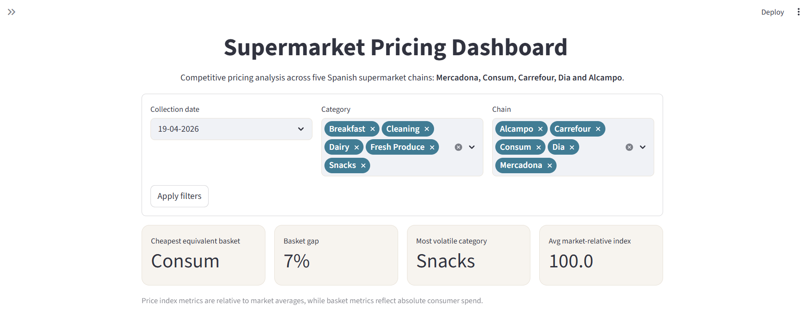
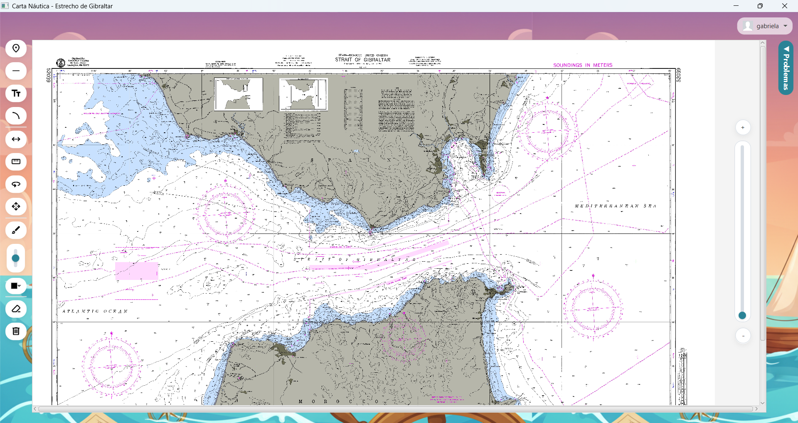
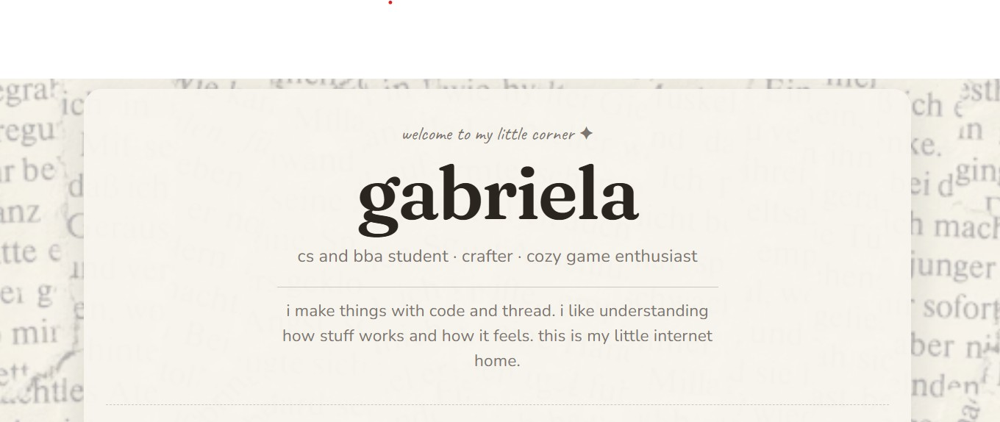
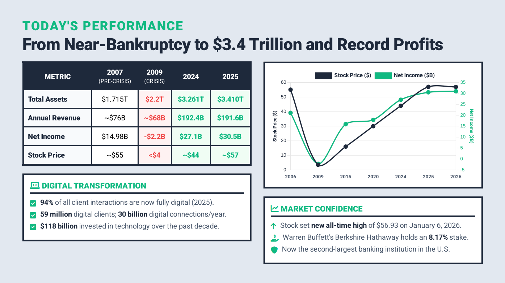
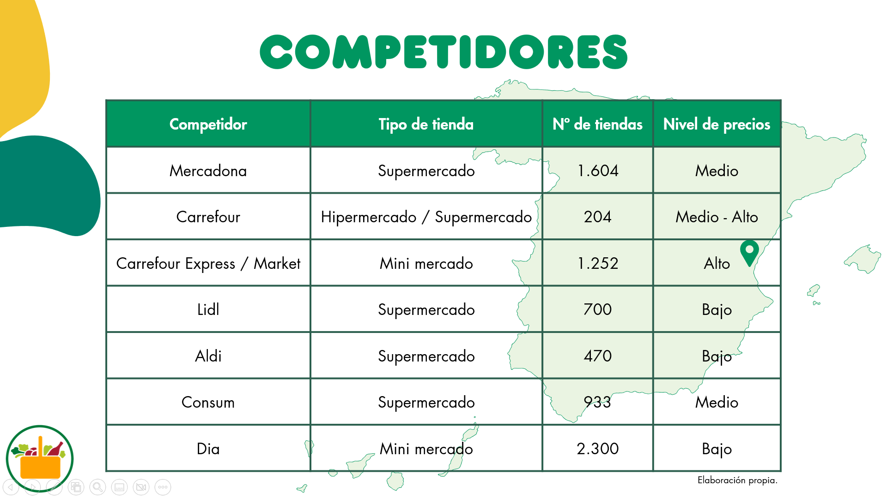

Double degree in Computer Science and Business Administration. I build things that make sense — technically and in practice.
About
I'm Gabriela — a student of Ingeniería Informática + ADE at Universitat Politècnica de València, pursuing a dual degree that most people see as unusual but I see as a clear advantage.
I moved abroad on my own at 18, which forced me to adapt quickly and figure things out in a completely new environment. That experience shaped how I approach challenges — I pay attention, I learn fast, and I’m comfortable working independently.
When I work on something, I naturally focus on how problems are framed and solved — balancing what’s technically possible with what actually creates value. That’s the perspective I bring into everything I do, whether it’s building something technical, analyzing a problem, or making product decisions.
Projects

Built with Python, Streamlit, and Plotly, the project transforms raw supermarket pricing data into clear visual insights through comparative metrics, trend exploration, and category-level analysis.

Developed with Java and JavaFX, the project translates real navigation exam requirements into intuitive map-based interaction tools, including drawing tools, zoomable charts, and session tracking.

Instead of building a traditional portfolio, I wanted to create a small digital space mixing projects, music, games, reading, and everyday inspiration.

Analyzed Bank of America’s position during the 2008 financial crisis, focusing on acquisition decisions, government intervention, restructuring, and the strategic consequences of high-risk expansion.

Studied Mercadona’s position within the Spanish supermarket sector, examining oligopolistic dynamics, customer loyalty, barriers to entry, substitutes, and supplier relationships.
Background
Part of a multidisciplinary team developing biomedical devices focused on improving quality of life and delivering tangible social impact.
Working beyond the academic setting to design and build real solutions, combining engineering, collaboration, and applied problem-solving.
Contributed to strategic consulting projects for non-profits, focusing on analysis, proposal design, and recommendations.
Collaborated in multidisciplinary teams, applying structured problem-solving and business frameworks in real-world, impact-driven environments.
Working on projects at the intersection of software and business — including automation tools, product analysis, and case-based problem solving. Focused on building and shipping, not just studying.
A rigorous dual programme covering software engineering, algorithms, and data structures, alongside corporate finance, marketing strategy, and operations. Developing the ability to think across both technical and business contexts.
Program completed in English and Spanish. Earned top scores (7/7) in Mathematics: Analysis and Approaches and Spanish HL.
Get in touch
If you're working on something interesting — I'd like to hear about it.